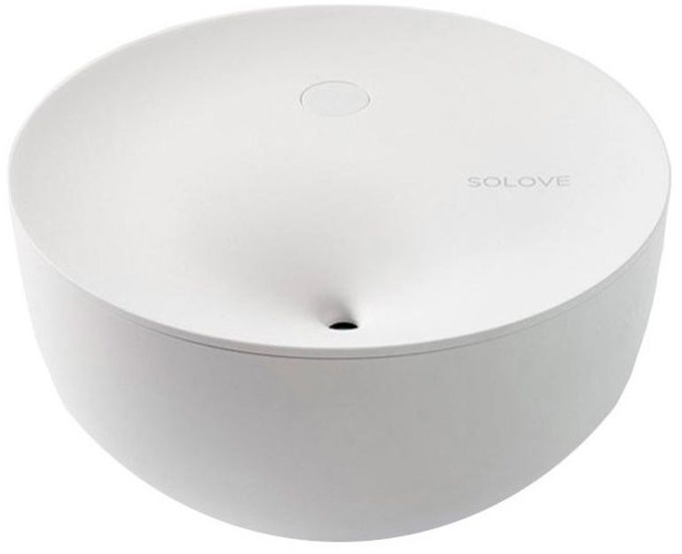

Артикуль 769513325
Solove H1 500ml
Высокочастотный ультразвуковой распылитель работает на частоте 108 кГц, что обеспечивает превращение воды в мелкодисперсный туман, который не оставляет следов на поверхностях. Объем резервуара для воды равняется 500 мл, чего достаточно для 20 часов работы. Мощность устройства составляет всего 2 Вт.
©2022 Чувство свежести
Контактная информация: +79536082026
Посещения: 21999